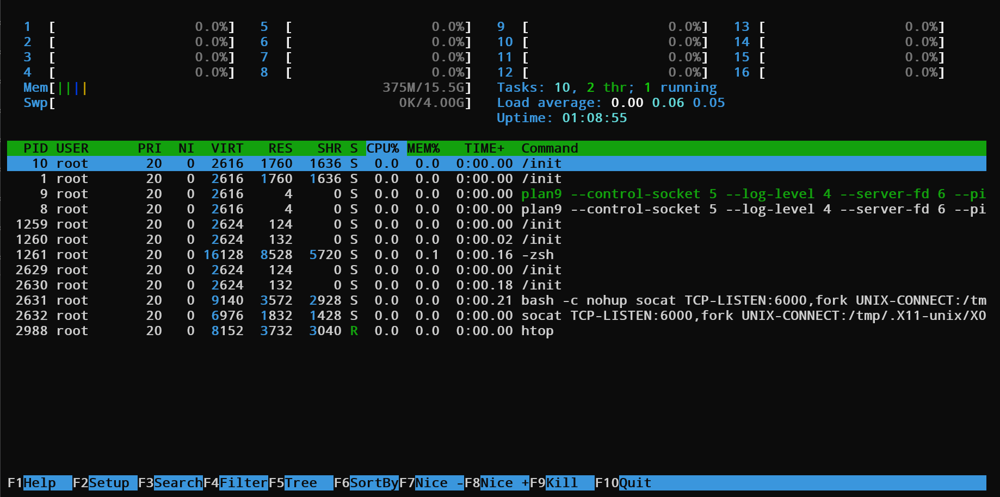
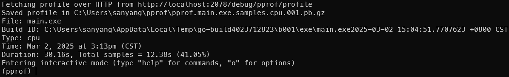

什么是调优
调优说白了，就是通过各种手段，提高程序的性能。
提升性能又包括两个大方向：
- 提升程序的执行速度
- 降低程序的内存占用
本文就这两个方向讲解在Go后端项目中的一些调优技巧。
如何发现问题
你为何想要调优？当然是发现程序性能没有达到你的预期。那么如何发现性能问题呢？本节来解决这个问题。
压测
发现问题最简单的方法：压测！
何为压测？压测就是模拟大量用户访问，测试系统的承载能力。
压测的工具很多，比如：
- wrk
- locust
- jmeter
这里只推荐wrk，没别的原因，因为它简单易学又好用，并且对于大部分项目来说，它足够了。
wrk的选项很多，可以通过输入wrk查看。
Usage: wrk <options> <url>
Options:
-c, --connections <N> Connections to keep open # 指定连接数
-d, --duration <T> Duration of test # 指定测试时间
-t, --threads <N> Number of threads to use # 指定线程数
-s, --script <S> Load Lua script file # 指定Lua脚本文件
-H, --header <H> Add header to request # 指定请求头
--latency Print latency statistics # 打印延迟统计
--timeout <T> Socket/request timeout # 指定超时时间
-v, --version Print version details # 打印版本信息
Numeric arguments may include a SI unit (1k, 1M, 1G)
Time arguments may include a time unit (2s, 2m, 2h)
最常用的选项是-c和-d，-c指定连接数，-d指定测试时间。
例如：
wrk -c 1000 -d 10s -t 10 --latency https://your-api-url/start
这个命令的意思是：使用1000个连接，测试10秒，使用10个线程，打印延迟统计。
压测的命令写好后，就可以运行了。
运行后，你会看到类似以下的输出：
Running 10s test @ https://your-api-url/start
10 threads and 1000 connections
Thread Stats Avg Stdev Max +/- Stdev
Latency 56.18ms 117.44ms 1.98s 92.87%
Req/Sec 123.81 89.99 410.00 63.18%
Latency Distribution
50% 29.49ms
75% 32.00ms
90% 43.03ms
99% 503.66ms
10569 requests in 10.09s, 2.30MB read
Socket errors: connect 1, read 0, write 0, timeout 22
Requests/sec: 1047.91
Transfer/sec: 233.29KB
也就是说10个线程，每个线程1000个连接，测试10秒，总共10000个请求。
分析一下输出：
-
-
Latency Distribution 50% 29.49ms 75% 32.00ms 90% 43.03ms 99% 503.66ms
- Latency 是延迟，也就是请求的响应时间。
- 50% 29.49ms 是延迟的50%，也就是50%的请求的响应时间小于29.49ms。
- 75% 32.00ms 是延迟的75%，也就是75%的请求的响应时间小于32.00ms。
- 90% 43.03ms 是延迟的90%，也就是90%的请求的响应时间小于43.03ms。
- 99% 503.66ms 是延迟的99%，也就是99%的请求的响应时间小于503.66ms。
-
Req/Sec 122.50 64.08 360.00 68.72%
- Req/Sec 是每秒请求数。
- 122.50 是一个线程每秒请求数的平均值。
- 64.08 是标准差，也就是一个线程每秒请求数的波动范围。
- 360.00 是最大值，也就是一个线程每秒请求数的峰值。
- 68.72% 是百分比，也就是一个线程每秒请求数的分布情况。表示 68.72% 的请求在平均每秒请求数（122.50）加减标准差（64.08）的范围内。
-
-
-
10557 requests in 10.09s, 2.30MB read
- 10557 是总请求数。
- 10.09s 是总测试时间。
- 2.30MB 是总读取数据量。
-
Socket errors: connect 0, read 0, write 0, timeout 32
- connect 0 表示连接错误0次。
- read 0 表示读取错误0次。
- write 0 表示写入错误0次。
- timeout 32 表示超时32次。
-
Requests/sec: 1046.05
- Requests/sec: 1046.05 是每秒处理的请求数。也就是所谓的QPS。
-
Transfer/sec: 232.88KB
- Transfer/sec: 232.88KB 是每秒传输的数据量。
-
线程统计
总统计
这是压测Get请求的输出，压测Post/Put/Delete请求的输出类似，只是把需要用Lua脚本来做。
例如：
wrk -c 1000 -d 10s -t 10 -s post.lua --latency https://your-api-url/start
post.lua 是一个Lua脚本，用于模拟Post/Put/Delete请求。
lua脚本的内容这里不再赘述，感兴趣的可以自行搜索。输出的分析和Get请求的分析类似。
监测
压测其实可以发现性能方面的问题，但是它不能告诉你内存方面的问题。
内存方面的问题，可以通过监测来发现。
其实如果详细讲解如何监测，也就是在将如何定位问题了，但是我们这里是讲如何发现问题，也就是说你只有发现问题了，才会想到要监测，才会定位并解决问题。
那么如何发现内存问题呢？
很简单，查看每一个进程的内存使用情况就行。这样就可以发现进程的内存使用是不是太高了。
最常用的命令是：ps，top，htop。
最酷最推荐的是 htop 因为其操作更多，更直观，并且界面更酷。
例如：
从中可以看到，内存使用最高的进程是哪个，然后就可以针对性的进行调优了。
同时你也可以手搓土制后台程序，对htop或者top进行轮询，检测每个进程的内存使用情况。如果超标，则设置对应的处理机制自动处理。
如何定位问题
ok，现在我们已经可以通过压测和监测发现问题了。那么接下来就是解决问题了。
提升执行速度
首先来讲如何提升执行速度。
想要提升执行速度，需要先找到在哪吃掉了CPU时间，怎么找？pprof！
pprof是Go语言自带的性能分析工具，可以分析程序的CPU使用情况和内存使用情况。
问题来了，pprof怎么用？
esay! 只需要在程序中注册pprof的服务器！再简单不过。
例如：
package main
import (
"log"
"net/http"
_ "net/http/pprof"
"os"
"runtime"
"sync"
"time"
)
func main() {
// 配置日志输出格式: 显示文件名行号+标准时间格式
log.SetFlags(log.Lshortfile | log.LstdFlags)
log.SetOutput(os.Stdout) // 确保日志输出到标准输出
// 性能分析相关配置
runtime.GOMAXPROCS(1) // 限制程序使用1个OS线程，更容易暴露并发问题
runtime.SetMutexProfileFraction(1) // 记录所有互斥锁的等待事件（1=100%采样）
runtime.SetBlockProfileRate(1) // 记录所有goroutine阻塞事件（纳秒级精度）
// 启动pprof性能分析服务器
go func() {
// 在2078端口启动HTTP服务，提供pprof接口：
if err := http.ListenAndServe(":2078", nil); err != nil {
log.Fatal(err)
}
os.Exit(1)
}()
// 执行程序原本的逻辑
}
运行程序后，访问http://localhost:2078/debug/pprof/profile，就可以看到pprof的界面。
页面显示的这些指标就是程序运行时的pprof采集的数据，可以点击对应的指标，查看详细信息。
- allocs: 内存分配情况
- block: 阻塞情况
- cmdline: 命令行参数
- goroutine: 协程情况
- heap: 堆内存情况
- mutex: 互斥锁情况
- profile: 性能分析
- threadcreate: 线程创建情况
- trace: 追踪
其中trace也是很重要的工具，但是这里不展开讲，后续会有文章详解。
而threadcreate所涉及的问题很复杂，并且与性能调优关系不大，所以这里不展开讲。
cmdline就是程序的启动命令，一般用不到。
除此之外，其他所有的命令都是调优的关键。
我们一步一步来。
这一节主要讲解如何提升执行速度，如果我们在用htop和top的时候，发现程序的CPU使用率很高，那么就可以使用pprof来分析。
我们借助profile来采集CPU的占用信息，所以可以先用go tool pprof来排查一下
go tool pprof http://localhost:2078/debug/pprof/profile
然后就可以看到pprof的界面了。
输入top，可以看到CPU使用率最高的函数。
于是你可以定位到最吃CPU的函数，比如示例里占用了99.9%的CPU的emptyLoop。
于是你现在要定位到这个函数，看看为什么它这么耗CPU。
输入list emptyLoop，可以看到这个函数的具体实现。
可以发现这个函数里有一个for循环，无效循环了超多次。这其实让我想起来R星的GTA5线上BUG，在进入线上战局的时候会无效循环上亿次。
修改坏函数的逻辑，程序的速度即可提升。
实际上你还可以拥有一个pprof的web界面，这样你就可以更直观地看到程序的性能情况。
这个东东需要你有graphviz，其实各个平台都可以安装它，安装后在pprof的界面中输入web，就可以看到web界面。
我写的示例程序很简单，所以这里只有一个框框，而大型项目会有很深的调用栈，所以会有很多框框，其中越大的框框，说明这个函数越耗CPU。
通过这种方式也可以定位到最耗CPU的函数，然后修改它的逻辑，程序的速度即可提升。
如果你发现，通过这样的方法得到的信息中所有函数的CPU消耗都合理，那么说明你的程序逻辑没问题，还需要调优就要从其他方面入手。
这里罗列一些常见的行之有效的方案，由于时间关系，这里不展开讲，后续会有文章详解。
-
Go语言层面调优
- 有锁换无锁
- 协程池
- 内存逃逸优化
- 对象池
- GC优化
- ......
-
数据库层面调优
-
慢SQL优化
- 找到慢SQL
- 建立合适索引
- 判断优化器是否使用索引
- 索引覆盖
- 避免索引失效
- 联合索引避免file sort
- 避免无效回表，例如：深分页问题。
- 找到无效索引
- ......
-
连接池优化
- 连接池大小
- 连接池超时
- 连接池空闲
- 连接池预热
- ......
-
缓存优化
- 缓存预热
- 缓存更新
- ......
-
其他优化
- ......
-
总而言之，如果详细讲解程序运行速度调优，那真是三天三夜都讲不完。这里先卖个关子，后续文章会详细讲解。
降低内存占用
降低内存占用，需要先找到在哪吃掉了内存，继续使用pprof。
pprof的命令和之前一样，只是需要采集的指标不同。
例如：
go tool pprof http://localhost:2078/debug/pprof/heap
同样使用top命令，可以看到内存使用情况。
同理也可以使用list命令，查看具体是哪个函数占用了内存。
通过这种方式，可以定位到最耗内存的函数，然后修改它的逻辑，程序的内存占用即可降低。
当然这种方案适用于内存被错误占用的情况，而如果你发现逻辑没问题，内存没泄漏，那么就需要从其他方面入手。
这里罗列一些常见的行之有效的方案，由于时间关系，这里不展开讲，后续会有文章详解。
- 使用sync.Pool，减少内存分配。
- 使用内存逃逸优化，减少堆上分配。
- 使用协程池，减少内存分配。
- ......
当然其实我们知道，Go语言的GC是很强大的，所以很多时候我们不需要太担心内存占用问题。但是！GO语言是有可能发生Goroutine泄漏的！
Goroutine泄漏的场景有很多，这里不展开讲，后续会有文章详解。
这里只讲一个最常见的场景。
你们有没有想过，如果一个Goroutine向一个没初始化的channel发送/读取数据，会发生什么？
答案是：如果这个Goroutine不是main Goroutine，那么讲其永久挂起，也就是Goroutine泄漏。
如果这个Goroutine是main Goroutine，那么程序将直接崩溃。
所以，不要向未初始化的channel发送/读取数据。
至于其他内存优化的场景，请期待我的后续文章。
总结
性能调优是一个很复杂的话题，这里只是抛砖引玉，讲了一些最基础的发现问题和解决问题的方法。
后续我会持续更新文章，将我用到、学到的性能调优方法分享给大家。